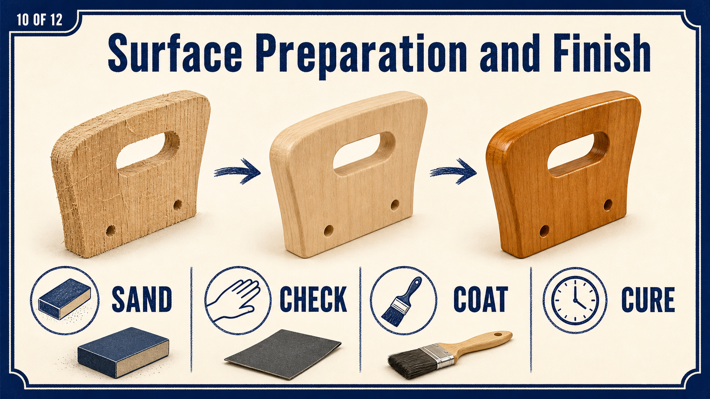

Joint or component fault
Movement, an open joint, split timber or unstable hardware needs teacher advice before surface work.
Industrial Technology – Timber
Weeks 13–14: Surface preparation, defect repair and final inspection

Two-week roadmap
Prepare an even surface without rounding joints, thinning tapers or changing the approved shape. Apply the procedures and checks to the actual bedside-table project before irreversible work continues.
Your work
Your entries save automatically in this browser. Use Print / Save PDF before leaving the page.
Theory 1

Complete a systematic inspection of the slim tapered-leg bedside table before any finish is applied. Use raking light across each surface so scratches, dents, glue residue, uneven sanding and tear-out cast visible shadows. Check the thick top, tapered legs, rails, curved front apron and joint lines in a consistent order, then run clean fingertips lightly over the timber to detect faults that may not be obvious by sight.
Distinguish surface issues, such as scratches or rough grain, from structural issues, such as movement, open joints or parts sitting out of alignment. Surface faults may be corrected through careful preparation, while structural concerns must be checked before further sanding or finishing. Record each issue and the repair decision so work is deliberate rather than repeated or excessive.
Stop and seek teacher advice before making any adjustment that could alter the approved shape, reduce a component, soften a joint line or affect the fit of a joint.
Movement, an open joint, split timber or unstable hardware needs teacher advice before surface work.
Glue residue, pencil marks, minor dents or machining marks may be corrected with the approved process.
A taper, curve, edge or overhang outside the approved form must not be “fixed” by unplanned sanding.
Theory 2
Before applying a finish, inspect the completed tapered-leg bedside table under strong, even light. Look across each surface at a low angle to reveal scratches, glue marks, dents, uneven areas and machining lines. Sand in a controlled sequence, moving gradually from surface correction to final smoothing without skipping stages.
Work with the grain on the top, rails, legs and apron to avoid visible cross-grain scratches. Protect crisp edges and joint lines by using light pressure and avoiding excessive sanding near corners, shoulders and fitted joints. The curved front apron should be sanded evenly with suitable support so its shape is maintained rather than flattened or rounded irregularly.
End grain may require extra care because it absorbs finish differently and can remain visibly rough. Do not round over joinery or soften details that define the slim tapered-leg form. Use required PPE and dust extraction, then remove all sanding dust from surfaces, corners and joints.
Careful preparation determines whether the final finish appears smooth, even and professional.
Each grit has a job. A coarser abrasive removes deeper machining marks; later grits remove the scratches left by the previous stage. Skipping too far can leave deep scratches that only become obvious after finish is applied.
Work with the grain on visible surfaces. Cross-grain scratches cut through the fibre pattern and can remain visible under a clear finish. Use a sanding block on flat areas to spread pressure and preserve flatness. Vacuum or wipe as directed between stages so loose particles do not create random deep scratches.
Theory 3
The slim tapers and broad curved apron are easy to damage through uneven sanding pressure. The goal is to improve the surface while preserving the approved line, transition and crisp joint relationship.
Support the component and follow the form. Use the approved block, pad or hand method so pressure is distributed. Work along the taper rather than across it. On the curved apron, use a backing shape that follows the curve without flattening the centre or hollowing the ends.
Protect arrises and shoulders. Edges should be made safe as directed, but uncontrolled rounding can create uneven gaps at joints and make matching legs appear different. Mask or avoid finished joint lines where needed and count strokes or compare components directly to keep the set consistent.
Use light to check shape. Reflections and shadows reveal flats, waves and changing edge width. Stop before the reference line or approved profile is lost.
Keep the transition straight and compare all four legs from the same viewing angle.
Maintain a fair curve with no flats, hollows or damaged end joints.
Use a flat block and even pressure so the broad surface remains flat.
Create the directed safe edge without rounding away accuracy or changing the design.
Theory 4
Inspect the completed slim tapered-leg bedside table under strong, even light before any finish is applied. View surfaces from different angles to identify glue marks, small gaps, dents, tear-out and scratches that may become more visible after finishing. Decide whether each defect needs removal, blending or careful repair, based on the timber, the size of the defect and its location.
A repair suitable for a hidden area may look unacceptable on the tabletop, front apron or a visible leg. Where sensible, test the method on a matching offcut to check colour, texture and how the repair responds to sanding. Remove glue marks fully rather than sanding them into the surface.
Avoid excessive sanding, poorly matched patches or heavy-handed repairs that create a larger, lighter or uneven area. Small defects should not be “fixed” in a way that draws more attention to them. Ask the teacher before cutting, reshaping or significantly sanding any visible component, especially where the repair could alter the table’s lines, joinery or tapered form.
Repair only after the cause is understood. A dent, tear-out, open joint, split, glue patch and sanding hollow require different responses. Do not fill or sand a structural fault to make it less visible.
Check compatibility. Any approved repair must suit the timber and finish system. Complete a test on scrap where directed and allow the repair to reach the required stage before sanding or coating.
Theory 5
Raking light travels across the surface at a low angle and exaggerates scratches, glue patches, dents, waves and dust. Touch can confirm changes that are difficult to see, but clean hands and gentle pressure are essential.
Follow a fixed route. Inspect the thick top first, then each tapered leg, the rails, curved front apron, joint lines and any approved storage front. View surfaces from more than one angle and change the light direction so scratches are not hidden by the grain.
Mark faults lightly and specifically. Use the teacher-approved method to identify the location and type of issue. “Sand more” is not a useful instruction. Record whether the fault is a scratch, glue residue, sharp edge, uneven curve, structural gap or finish-readiness concern.
Stop at the boundary. If correction could reduce a component, alter a taper, soften a shoulder or change a joint, seek teacher advice. The final inspection protects the project from last-minute overworking.
Remove loose dust so it does not hide or create scratches.
Move the light and your viewpoint across each surface.
Feel for ridges, glue and abrupt changes with clean hands.
Surface, structural or design-related faults need different responses.
Use the least invasive approved action, then repeat the inspection.
Theory 6

Fine timber dust affects health, finish quality and workshop safety. Effective control begins with extraction and work methods, then uses the approved PPE as an additional layer.
Control dust at the source. Use connected extraction where provided, keep guards and collection points correctly positioned, and avoid blowing dust into the air or across another person’s work. Follow the workshop procedure for cleaning machines, benches and the floor.
Prepare a clean finishing handover. Remove dust from joints, corners, the underside of the top and the curved apron without contaminating the surface. Keep the table away from active sanding and inspect it again after dust removal.
Record the hold point. Before finish is issued, the project should be structurally sound, fully inspected, clean and approved to proceed. This prevents coating over a defect that becomes harder to correct later.

Use only where specified and fitted for the task; it does not replace extraction.

Fine dust and particles still need controlled work practices and clean-up.

Keep people away from active dust or cleaning hazards as directed.
The full table is inspected and protected from new dust before finishing.
Guided practice
Each incorrect option explains the misunderstanding. Use the hint, return to the theory and keep trying until the question is mastered.
Apply your learning
Write a genuine first attempt, check the live guidance, compare with the appropriate response example and improve your explanation before self-assessing.
Finish the two-week block
Your answers save in this browser as you work, but browser storage is not the official submission. Save the completed page as a PDF before closing it.
No marks, answers or personal information are sent from this webpage.